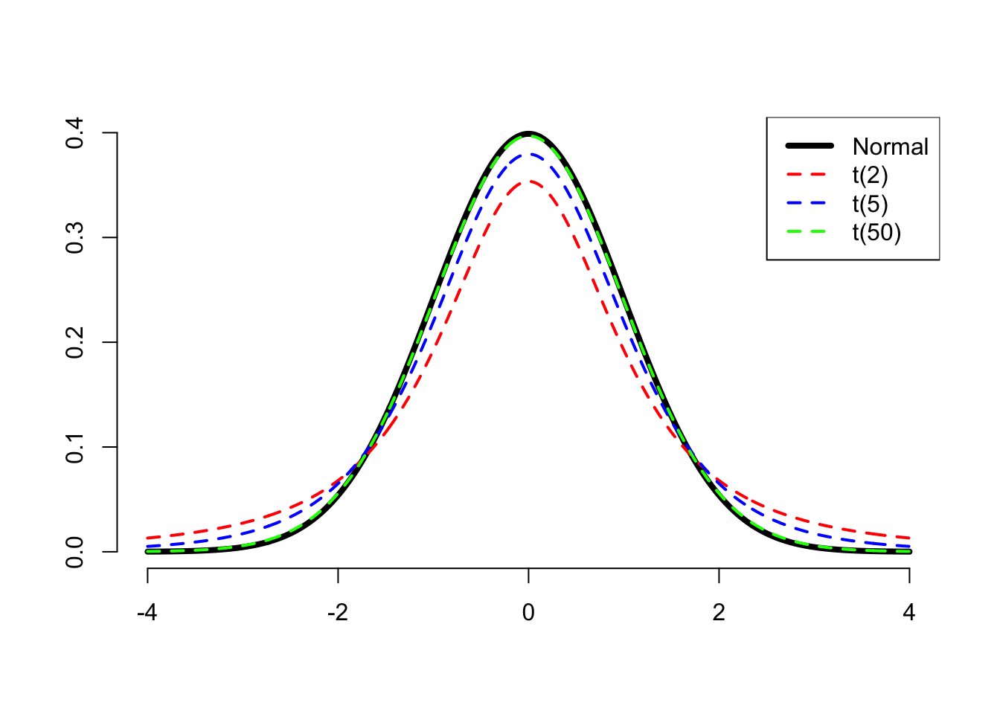

Interpret confidence intervals
Take-home message
- A \(n\)% confidence interval is the range of values within which we are \(n\)% confident that the true population value will fall.
- Saying we are \(n\)% confident is not the same as saying that there is a \(n\)% probability that the true population value falls in that interval.
- If we gathered new data and repeated our analysis an infinite number of times, then in \(n\)% of those repeated analyses, the \(n\)% confidence interval would contain the true population value.
- In Psychology, we typically care about 95% confidence intervals.
We do not want to report a single number as the estimate, as we know that our estimate will almost certainly differ from the true value of the population parameter. We probably want to be cautious and report a range of plausible values for the parameter, known as confidence interval (CI), which is more likely to capture the true value of the parameter. See the following image for a summary of the idea:
CautionDeriving the confidence interval formula
To get the range of plausible values, we will use the fact that in a Normal distribution 95% of the values are roughly between the mean - 2 SD and the mean + 2 SD.
We know that the sample mean follows a normal distribution, and we also know that the standard deviation of the sampling distribution of the mean is also known as the standard error (SE).
However, we cannot obtain the standard error of the mean as we do not have the data on the entire population. If we used the formula for the standard error, we would need to know the population standard deviation \(\sigma\) (which we don’t):
\[ SE = \frac{\sigma}{\sqrt{n}} \quad \text{where} \quad \sigma = \text{pop. standard deviation} \]
Let \(\mu\) be the population mean and \(\sigma\) the population standard deviation. In Week 11 of semester 1 you saw that
- the sample mean \(\bar X\) follows a normal distribution;
- its average \(\mu_{\overline X}\) is equal to the unknown population mean \(\mu\);
- its standard deviation is equal to \(\sigma_{\overline X} = SE = \sigma / \sqrt{n}\), also known as the standard error of the mean.
\[ \bar X \sim N(\mu_{\overline{X}}, \sigma_{\overline{X}}) \quad \text{where} \quad \begin{cases} \mu_{\overline{X}} = \mu \\ \sigma_{\overline{X}} = SE = \frac{\sigma}{\sqrt{n}} \end{cases} \]
Property 1 tells us that if we computed the sample mean on many samples from the population and created a histogram, this would be bell-shaped like a Normal distribution. So, the sampling distribution of the mean is a Normal distribution.
Property 2 tells us that the sampling distribution of the mean is centred at the unknown population mean \(\mu\). So, on average our sample means are close to the true but unknown population mean.
Property 3 tells us that the spread (standard deviation) of the sampling distribution is \(\sigma_{\overline X} = \sigma / \sqrt{n}\). The larger the sample size, the smaller the standard error, and the more precise the estimate is.
Recall this image for a generic \(X \sim N(\mu, \sigma)\) distribution:

The middle 95% probability lies between the values \(x = \mu - 2 \sigma\) and \(x = \mu + 2 \sigma\).
To be more precise, the values between which lies the central 95% probability are those quantiles cutting 0.025 probability to the left and 0.025 probability to the right (= 0.975 to the left).
qnorm(c(0.025, 0.975)) # note that: 0.975 - 0.025 = 0.95[1] -1.96 1.96Meaning that 95% of the values in a normal distribution are between
\[ [\mu - 1.96 \cdot \sigma, \ \mu + 1.96 \cdot \sigma] \]
If we replace \(\mu\) and \(\sigma\) with \(\mu_{\overline X}\) and \(\sigma_{\overline X}\) in the interval above, we obtain the corresponding 95% confidence interval for the sample mean \(\bar X \sim N(\mu_{\overline X}, \sigma_{\overline X})\).
That is, roughly 95% of the values are between
\[ [\mu_{\overline X} - 1.96 \cdot \sigma_{\overline X},\ \mu_{\overline X} + 1.96 \cdot \sigma_{\overline X}] \]
Substituting the formula for the \(SE = \sigma_{\overline X} = \sigma / \sqrt{n}\), we know that 95% of the values are roughly between:
\[ \left[ \mu - 1.96 \cdot \frac{\sigma}{\sqrt n},\ \mu + 1.96 \cdot \frac{\sigma}{\sqrt n} \right] \]
The formula above is the 95% confidence interval for the population mean.
There is one problem though… The confidence interval depends on \(\mu\) and \(\sigma\), the population mean salary and population standard deviation.
When we don’t have the entire population data and we can only afford ONE sample, we do not have \(\mu\) and we also do not have \(\sigma\). We estimated \(\mu\) with the sample mean \(\bar x\), and we must also estimate \(\sigma\) with the sample standard deviation \(s\).
The standard error becomes:
\[ SE = \frac{s}{\sqrt n} \qquad \text{where } s = \text{sample standard deviation} \]
and the confidence interval for the population mean becomes:
\[ \left[ \bar x - 1.96 \cdot \frac{s}{\sqrt n},\ \bar x + 1.96 \cdot \frac{s}{\sqrt n} \right] \]
However, that formula is not quite right! We estimated the unknown \(\sigma\) with the sample standard deviation \(s\). This brings an extra element of uncertainty.
Because we are unsure about the actual value of the population standard deviation, the resulting distribution is no longer Normal, but a distribution that is more “uncertain” and places higher probability in the tails of the distribution, meaning that we have a wider range of values that we can observe (hence higher uncertainty).
When the population standard deviation is unknown, the sample mean follows a t-distribution.
The t-distribution depends on a number called the degrees of freedom (DF) of the distribution, which is related to the sample size. The degrees of freedom is equal to the sample size - 1: \[ df = n - 1 \] Because of this, we refer to the distribution of the sample mean as the \(t(n-1)\) distribution, and we write the degrees of freedom within parentheses.
t-distributions with smaller degrees of freedom (corresponding to smaller samples) put more probability on the tails of the distribution, meaning more uncertainty. As the degree of freedom increases, the t-distribution is indistinguishable from the Normal distribution, and this happens approximately with df \(\geq\) 30.

Because the distribution has changed, we need to find the new values in between which lies 95% of the probability. These are no longer -1.96 and 1.96 and will vary with the distribution.
Consider a sample of size \(n = 10\). The corresponding df = 10 - 1 = 9. The values in between which lies the middle 0.95 probability are:
# quantiles of a t-distribution with 9 df
qt(c(0.025, 0.975), df = 9)[1] -2.26 2.26These two values have, respectively, a probability of 0.025 to the left and 0.025 to the right.
Hence, for a t(9) distribution, 95% of the values are between:
\[ \left[ \bar x - 2.26 \cdot \frac{s}{\sqrt n} ,\ \bar x + 2.26 \cdot \frac{s}{\sqrt n} \right] \]
In general, we denote the two quantiles of the t-distribution as \(-t^*\) and \(+t^*\), so the interval is written in general as:
\[ \left[ \bar x - t^* \cdot \frac{s}{\sqrt n} ,\ \bar x + t^* \cdot \frac{s}{\sqrt n} \right] \]
Confidence intervals and the population mean
If we were to do this whole process over and over again:
- take a random sample of size \(n\);
- construct a 95% confidence interval.
then about 95% of the confidence intervals we created would contain the population mean. In turn, this also means that 5% of those intervals will not.
So if we did this 100 times, we would expect about five of our 95% confidence intervals to not contain the true population mean.
And if we had been constructing 80% confidence intervals instead, we would expect roughly 80 of them to contain the population mean.
Warning
When we have constructed a single interval, we do not say that the interval contains the population mean with probability of 95%, as this is wrong. We can only say that we are 95% confident it contains the population mean.
We speak about probability when we refer to a collection of confidence intervals. For example, if we have constructed one hundred 95% confidence intervals, then there is a probability of 0.95 that they (collectively) will contain the population parameter.
On the contrary, when we refer to just one confidence interval, we speak about confidence.
Glossary
- Population. The entire collection of units of interest.
- Sample. A subset of the entire population.
- Parameter. A fixed but typically unknown quantity describing the population.
- Statistic. A quantity computed on a sample.
- Sampling distribution. The distribution of the values that a statistic takes on different samples of the same size and from the same population.
- Standard error. The standard error of a statistic is the standard deviation of the sampling distribution of the statistic.
- Confidence interval (CI). A range of plausible values around an estimate (e.g., a sample statistic), taking into account uncertainty in the statistic (e.g., sampling variability)
- Confidence level. The percentage of confidence intervals which will contain the true population parameter in the long run (i.e., if you sampled the population and constructed confidence intervals many times over). The proportion of all samples whose intervals contain the true parameter.